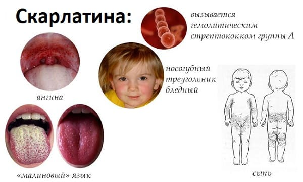

Есть такое греческое слово streptos, что означает «крученный», «витой», «имеющий вид цепочки». И есть такой микроб – стрептококк: если разглядывать его под микроскопом, то хорошо видны самые настоящие цепочки, состоящие из неподвижных шариков.
Стрептококки – весьма распространенные микробы, способные вызывать у человека множество самых разнообразных болезней. Скарлатина – одна из них, пожалуй, самая известная, но, к сожалению, далеко не единственная.
Скарлатина известна людям с древности, и отношение к ней довольно серьезное, что, впрочем, вполне логично и обоснованно. Хотя древние врачи (Гиппократ и компания) все время путали скарлатину – то с корью, то с краснухой, то еще с чем-нибудь. Правда, хуже от этого никому не было. Это ведь мы сейчас умные – знаем, что корь и краснуха инфекции вирусные, а скарлатина – инфекция бактериальная. Следовательно, корь и краснуха пройдут сами, а при скарлатине очень помогут антибиотики. Но Гиппократ про антибиотики ничего не знал, поэтому имел моральное право путать скарлатину и корь, чем, впрочем, человечество благополучно занималось почти 2000 лет после Гиппократа. И только в 1675 г. врач Томас Сиденхем подробно описал симптомы скарлатины и назвал ее scarlet fever – пурпурная лихорадка. От слова scarlet – «пурпурный», «ярко-красный» – и пошло современное название болезни.
О том, что скарлатина – болезнь серьезная и смертельно опасная, определенная часть читателей этой книги, особенно те, кто учился в советской школе, узнали еще в детстве из знаменитого стихотворения Эдуарда Багрицкого «Смерть пионерки». От скарлатины погибла бедная пионерка Валя, и именно так, весьма трагично, представлялась судьба заболевшего ребенка до появления антибиотиков – ведь очень коварный и очень опасный микроб, этот стрептококк.
Следует заметить, что скарлатина – далеко не единственная болезнь, обязанная своим существованием стрептококку. Большинство ангин, ревматизм, гломерулонефрит, рожистое воспаление – все это варианты стрептококковой инфекции.
Но скарлатина – болезнь особенная. И да простят меня читатели за попытку объяснить ее суть, поскольку сделать это простыми словами очень сложно. Однако попытаемся. Итак…
Стрептококк – понятие растяжимое. Под этим словом подразумевают десятки, если не сотни бактерий, с одной стороны, похожих друг на друга, с другой – имеющих существенные различия в своей структуре. Каждый конкретный вид стрептококка способен вырабатывать совершенно определенные токсины. Переболев одним вариантом стрептококка и выработав к этому варианту иммунитет, человек может не вполне благополучно встретиться уже с другим стрептококком, который, в свою очередь, вырабатывает свои токсины и вызывает потребность опять болеть и опять вырабатывать очередные антитоксические антитела.
В то же время некоторым стрептококкам (подчеркиваю, далеко не всем, только некоторым) присуща способность вырабатывать определенное ядовитое вещество, которое называется эритротоксин.
У эритротоксина имеются две особенности. Во-первых, он вызывает в организме совершенно определенные изменения, и эти изменения проявляются в виде совершенно определенных симптомов, присущих именно действию эритротоксина; во-вторых, выработав иммунитет к эритротоксину одного стрептококка, организм перестает реагировать на эритротоксин любого другого стрептококка, поскольку в крови постоянно циркулируют антитела к эритротоксину.
Теперь уже можно сказать, что же такое скарлатина.
Скарлатина – это особый вариант стрептококковой инфекции с выраженной реакцией организма в ответ на действие эритротоксина. Таким образом, скарлатина может быть один раз в жизни, а вот стрептококковой инфекцией – другими ее формами, разумеется, можно болеть сколько угодно.
Термин «эритротоксин» в дословном переводе с греческого означает «красный токсин». В этом переводе – суть уже упомянутых нами, «совершенно определенных симптомов».
Но давайте начнем с начала – как же все происходит. Стрептококк попадает в организм человека воздушно-капельным путем, хотя возможно заражение и через продукты питания, и через грязные игрушки, и через одежду. Источником инфекции может быть больной любым вариантом стрептококковой инфекции или здоровый носитель стрептококка. 90 % всех, кто заболел, – дети до 16 лет, но дети первого года жизни почти не болеют, поскольку имеют врожденный, доставшийся от мамы антитоксический иммунитет.
Инкубационный период – от 1 до 12 дней. Очутившись в человеческом организме, стрептококк оседает на слизистых оболочках, главным образом в горле (на миндалинах) и начинает размножаться, выделяя при этом эритротоксин. Болезнь начинается остро – высокая температура + боли в горле. А уже через несколько часов появляется сыпь – это и есть ответная реакция на эритротоксин. Общий цвет кожи – красноватый, и на этом красном фоне можно видеть многочисленные очень мелкие красные точки (краснее, чем общий фон). Сыпь быстро покрывает все тело, особенно она выражена на боковой поверхности туловища, на сгибательных участках рук и ног. Кожа сухая, если провести рукой – напоминает наждачную бумагу. Особенно характерен вид лица – ярко-красные щеки и бледный, свободный от сыпи треугольник между носом и губами. Язык тоже яркий, малиновый, а на его поверхности – резко увеличенные сосочки. Ну а в горле, на миндалинах, – самая настоящая ангина: очень все красное и воспаленное, на миндалинах – гнойные налеты.

Всеми этими симптомами ребенок обязан эритротоксину стрептококка, который особым образом поражает кожу и слизистые оболочки. Это поражение приводит к массовой гибели клеток самого наружного слоя кожи (эпидермиса), и кожа начинает шелушиться. Шелушение появляется на лице уже к концу 1-й недели болезни, затем на туловище, кистях и стопах.
Что необходимо знать:
1 Стрептококк, к счастью, высокочувствителен к антибиотикам, в частности к пенициллину. Уже через 12–24 часа после начала лечения пенициллином в состоянии больного ребенка наблюдается отчетливое улучшение. Непереносимость пенициллина – не проблема, поскольку выбор антибиотиков, активно действующих на стрептококк, достаточно велик.
2 В любом случае, скарлатина относится к болезням, которые при своевременном лечении антибиотиками почти всегда заканчиваются благополучно, а без лечения – почти всегда заканчиваются тяжелыми осложнениями. Осложнения скарлатины – прежде всего, поражение сердца (ревматизм) и поражение почек (гломерулонефрит).
3 Очень опасно прекращать лечение сразу после улучшения состояния. Антибиотики должны применяться строго определенное время, в противном случае осложнения весьма вероятны.
4 Своевременное использование активных антибиотиков иногда (очень редко) приводит к тому, что организм не успевает выработать достаточный иммунитет к эритротоксину – очень быстро погибает стрептококк. Следствие этого – возможность повторно заболеть скарлатиной. Эти повторные случаи, тем не менее, протекают довольно легко.
5 Горло и миндалины – не единственный путь проникновения стрептококка в человеческий организм. Заражение может произойти и через любую рану на коже (ссадина, порез, операция). В таком случае будут иметь место все симптомы скарлатины, кроме ангины. Принципы лечения от этого не меняются.
6 Легкие, а иногда и среднетяжелые формы скарлатины благополучно лечатся на дому, без всяких больниц. Ребенка, как правило, полностью изолируют на 10 дней, после чего – если состояние хорошее – вполне можно гулять. Но!!! Для перенесшего скарлатину серьезную опасность представляет повторный контакт со стрептококком – это может привести к аллергическим заболеваниям и осложнениям. Поэтому жить нормально и гулять можно, но общение с другими людьми, особенно детьми, следует свести до минимума. По крайней мере, от момента начала заболевания до похода в школу или детский сад должно пройти 3 недели, не меньше.
Е.О.Комаровский. "Здоровье ребенка"